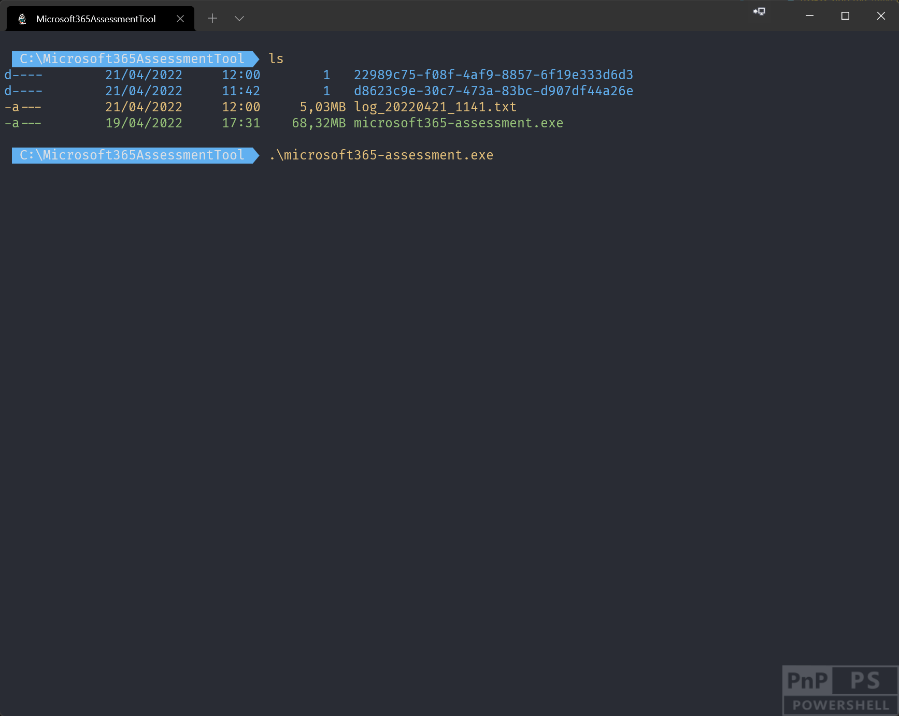

Running an assessment
Once you've downloaded the Microsoft 365 Assessment tool, configured authentication and setup optional environment configuration you're now ready to run your an assessment. A typical assessment will contain these steps:
- Start the assessment
- Stay informed about the assessment status
- Optionally Pause/restart the running assessment
- Generate a report containing the assessment details
- Stop the Microsoft 365 Assessment tool
You'll use the Microsoft 365 Assessment tool CLI (command line interface) for above steps, checkout the linked pages for more details on each step.
Microsoft 365 Assessment tool CLI
To use the Microsoft 365 Assessment tool you'll need to use the command line interface (CLI) and that can be done in two modes.
Launch without command line arguments
In this mode the Microsoft 365 Assessment tool CLI will be started and then allows you to keep providing arguments like List, Start, Status and more.

Note
To leave this mode you need to press enter without specifying an argument.
Launch with command line arguments
Here you specify the needed command and optionally it's arguments as part of the command line when you execute the Microsoft 365 Assessment tool.

Understanding the available command line options
The best way to figure out what's possible is by reading the documentation, but a brief summary of the options is also available if you add the --help argument. You can do this for the Microsoft 365 Assessment tool (microsoft365-assessment.exe --help) or for a specific command (microsoft365-assessment.exe start --help).